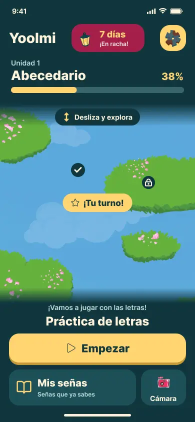
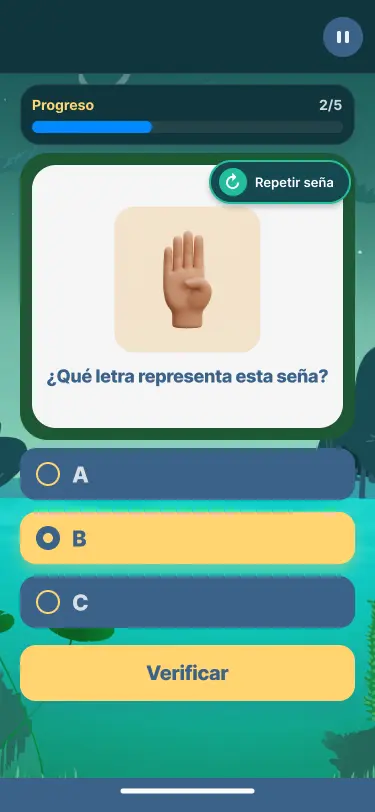
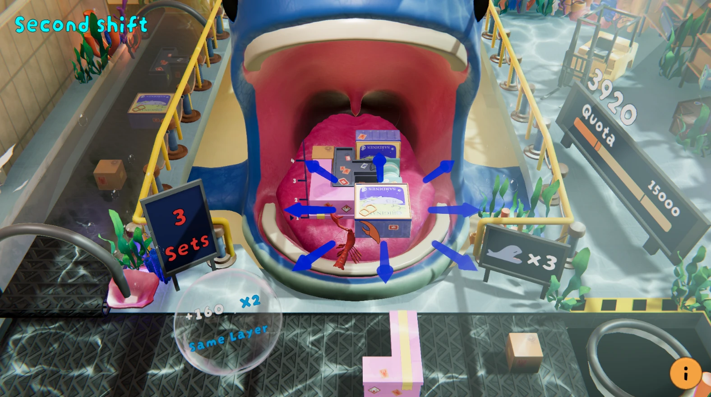
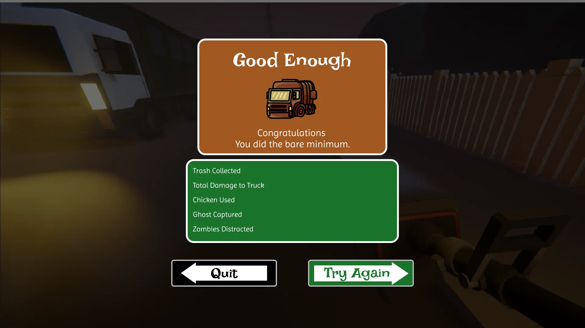

Interfaces para jugar.
Soy Andy, diseñador UX/UI e interactivo con experiencia en producción de videojuegos, QA y 3D. Esta selección se enfoca en mis interfaces: desde una app de aprendizaje hasta HUDs y retroalimentación para juegos.
Yoolmi
Una dirección visual lúdica para aprender Lengua de Señas Mexicana. Mi trabajo abarca pantallas de aprendizaje, onboarding y estados de cuenta, junto con investigación de usuarios y del problema que el producto debe resolver.
Mi contribución: UX/UI y flujos. Arte de personajes y escenarios: equipo del proyecto. Beta en desarrollo en Unity.


Lobster Loader
Una producción de seis meses para un puzzle 3D. El caso de estudio conecta cambios de controles, puntuación y retroalimentación con observaciones de playtesting, incluidas 103 respuestas recibidas.
Mi rol: Project Manager y diseñador UX/UI. Los recursos visuales y el desarrollo fueron contribuciones de equipo; los créditos detallados están en el caso de estudio.

Monster Route
Conceptos de menú, HUD y resultados alrededor de señalamientos de calle. La selección muestra composición de interfaces, agrupación de información y una estructura consistente entre niveles de desempeño.
Mockups de UI de un proyecto de equipo en VFS. Mis roles incluyeron gestión de proyecto, diseño UI y 3D. Las escenas y el arte de estos mockups provienen del proyecto de equipo.

Una perspectiva más amplia de producción.
Explora props para juegos, estudios de materiales y mi trabajo web responsivo, o escríbeme para conversar sobre el puesto.